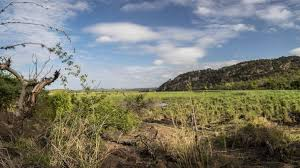
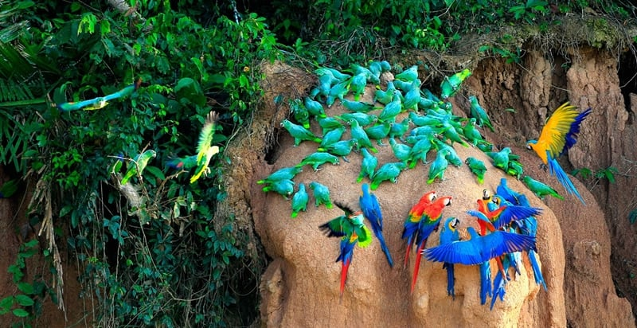
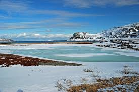

Embark on an exhilarating journey to some of the world's most iconic birding destinations. Whether you're a seasoned birder seeking new thrills or a novice enthusiast eager to discover the wonders of avian diversity, our Birds Hotspot Page is your gateway to unforgettable birdwatching adventures.
|
|
Nestled high in the misty mountains of Costa Rica, the Monteverde Cloud Forest Reserve is a paradise for birdwatchers. Explore lush rainforests teeming with colorful toucans, resplendent quetzals, and elusive hummingbirds. Keep your eyes peeled for rare and |
| Discover the rich birdlife of Australia's tropical north, where the ancient Daintree Rainforest meets the vibrant coral reefs of the Great Barrier Reef. Explore dense mangrove forests and coastal wetlands, home to an array of waterbirds, shorebirds, and migratory species. Keep an eye out for iconic Australian birds such as the kookaburra, rainbow lorikeet, and magnificent frigatebird. |
|  | Experience the thrill of safari in one of Africa's premier wildlife destinations, Kruger National Park. Home to over 500 bird species, including the majestic African fish eagle, graceful lilac-breasted roller, and colorful bee-eater, Kruger offers unparalleled opportunities for birdwatching amidst stunning savannah landscapes. Join guided birding tours or explore the park's extensive network of trails and hides at your own pace. |
|  | Venture into the heart of the Amazon rainforest in Peru's Manu National Park, a UNESCO World Heritage Site renowned for its incredible biodiversity. Explore pristine lowland rainforests and cloud forests, where you can encounter an astonishing array of bird species, from dazzling macaws and toucans to elusive antbirds and tanagers. Don't miss the famous macaw clay licks, where hundreds of parrots and macaws gather to feed on mineral-rich clay. |
|  | Experience birding in the land of the midnight sun on Norway's Varanger Peninsula. Located in the Arctic Circle, this remote wilderness is a haven for breeding seabirds, shorebirds, and waterfowl. Witness the spectacle of thousands of nesting seabirds on towering cliffs, including puffins, guillemots, and kittiwakes. Explore coastal marshes and tundra habitats, where you may encounter rare species such as the king eider and the elusive Siberian accentor. |